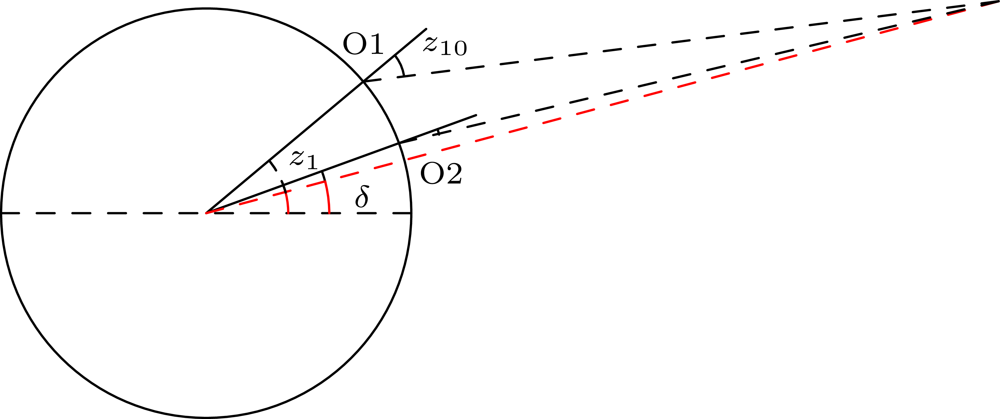

Problema 4#
Se observa el tránsito de la Luna simultáneamente desde dos lugares en el mismo meridiano de longitud.
En el primero, con latitud 40°50′30′′N, la distancia cenital de la Luna es 28°48′37′′ (al sur del cenit).
En el segundo, con latitud 20°40′12′′N, la distancia cenital de la Luna es 8°18′29.5′′ (al sur del cenit).
Suponiendo que la Tierra es esférica, calcular la distancia geocéntrica de la Luna en radios terrestres.
Planteamiento#
Una solución general de este problema exige conocer la hora de los tránsitos y las coordenadas geocéntricas, ya que los dos lugares de observación no tienen por qué estar en el mismo meridiano. Sin embargo, podemos resolver fácilmente esta versión simplificada sin tener que calcular la distancia entre los lugares de observación.

El dibujo no está a escala
Dado que la Luna culmina al sur del cenit en los dos casos, se cumple
\(\delta = \phi_1 - z_1 = \phi_2 - z_2 \)
Ojo: si la Luna culminara al norte del cenit en O2, las ecuaciones para ese lugar serían \(\delta = z_2 +\phi_2\)
Por la definición del ángulo de paralaje p:
Donde podemos utilizar la definición de paralaje horizontal, que nos da directamene la distancia en radios terrestres.
\( \sin P = R / d \)
Sustituyendo, despejamos P:
\(\phi_1 - (z_{10} - p_1) = \phi_2 - (z_{20} - p_2) \)
\(\phi_1 - \phi_2 = (z_{10} - z_{20}) - (p_1 - p_2) \)
\(\phi_1 - \phi_2 = (z_{10} - z_{20}) - P (\sin z_{10} - \sin z_{20} ) \)
from astropy.coordinates import Angle
import astropy.units as u
import numpy as np
import matplotlib.pyplot as plt
za = Angle("28d48m37s")
zb = Angle("8d18m29.5s")
lat_a = Angle("40d50m30s")
lat_b = Angle("20d40m12s")
P = ((za - zb) - (lat_a - lat_b)) / (np.sin(za) - np.sin(zb))
print('Paralaje horizonal:', P)
Paralaje horizonal: 0d58m45.35176412s
d = 1 / np.sin(P)
print('Distancia en radios terrestres:', d)
Distancia en radios terrestres: 58.5118486276421